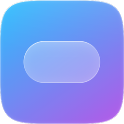
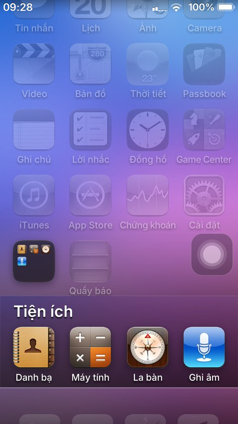
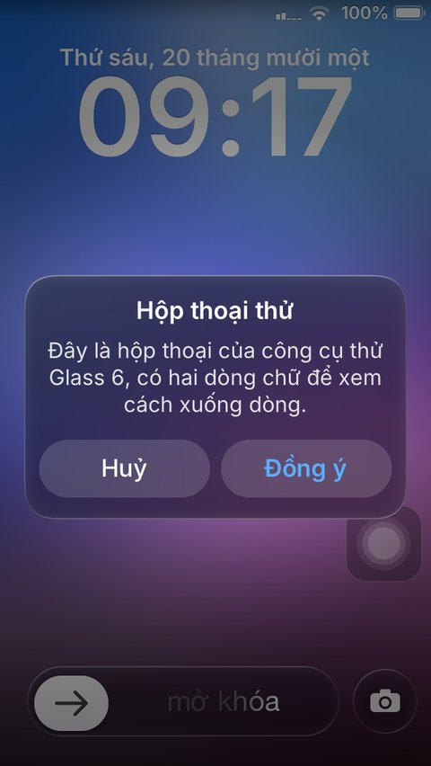
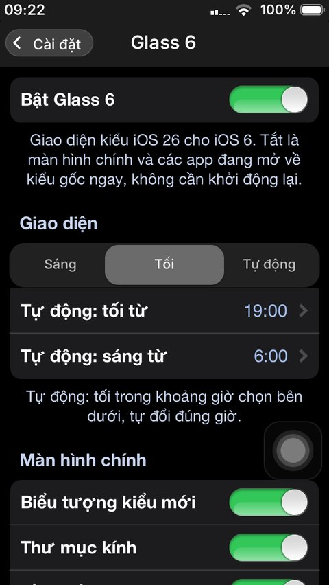
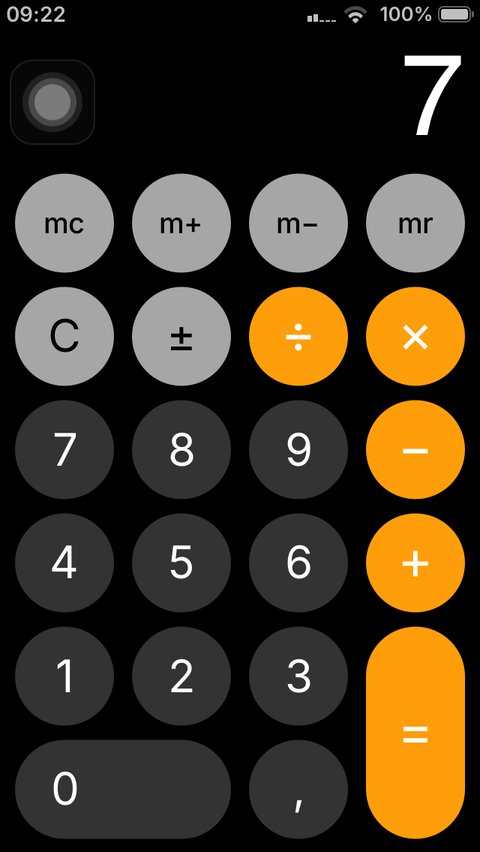
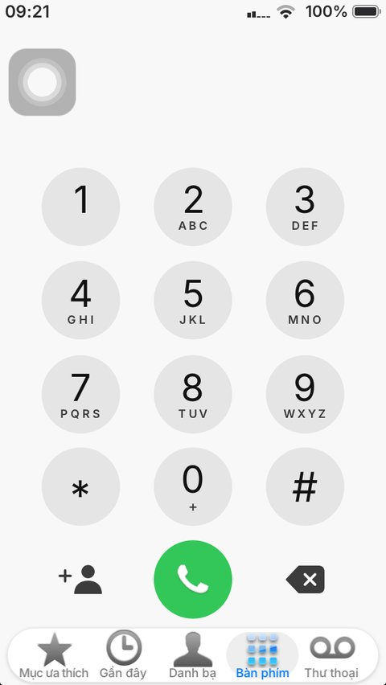
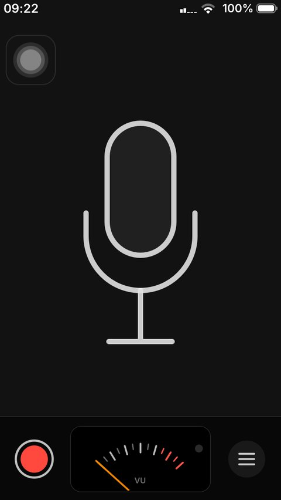
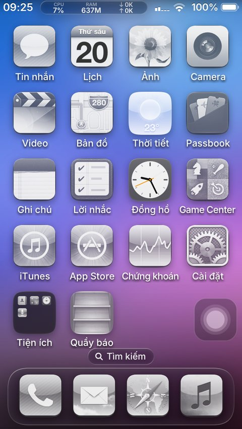
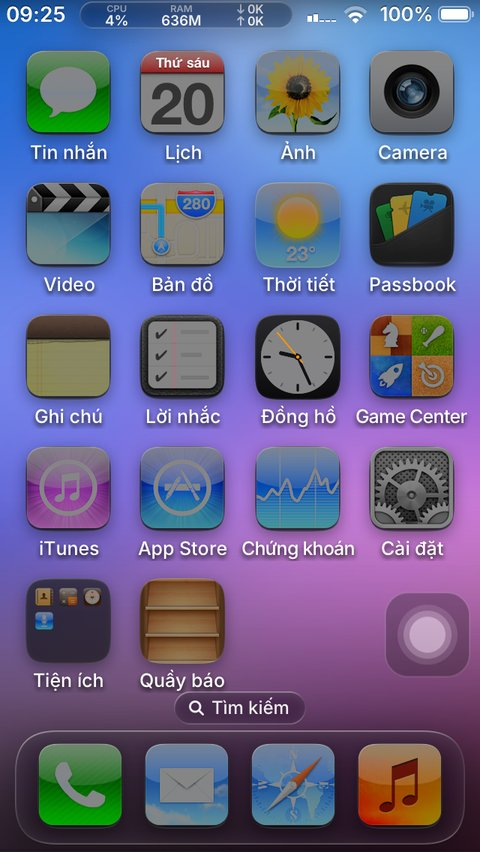

Glass 6
The Liquid Glass look of iOS 26 for jailbroken iPhone 5 and iPad mini 1 on iOS 6.
Version 1.0.0Cydia source: https://itovn.github.io/Glass6/cydia/
On iPhone 5
 Home screen
Home screen Lock screen
Lock screen Control Center
Control Center
Glass folders AssistiveTouch menu
AssistiveTouch menu
Glass alerts
Settings, dark mode Phone
Phone
CalculatorWhat You Get
Home screenGlass dock, glass folders, a pill-shaped search field; four icon styles (default, dark, clear, tinted); a live Clock icon.
Lock screenLarge clock, glass slide-to-unlock track, notification cards, a “Charged N%” line instead of the big battery picture.
Control CenteriOS 6 never had one — Glass 6 adds it: Airplane Mode, cellular data, Wi-Fi, Bluetooth, Do Not Disturb, rotation lock, light / dark, flashlight, brightness, volume, now playing. Pull down from the right side of the top edge.
Notifications, alerts, action sheetsFloating banner cards, Notification Center, alerts, action sheets and the volume HUD are all glass.
App switcheriPhone: app snapshot cards, swipe up to quit. iPad: the icon strip on glass.
Inside appsNavigation bars, floating tab bars, tables, switches, sliders, keyboard — restyled, following light / dark. Redrawn individually: Settings, Clock, Notes, Reminders, Calendar, Contacts, Photos, Messages; on iPhone also Phone, Calculator, Compass, Voice Memos. Third-party apps are left untouched.
Light / darkLight, dark, or automatic by time of day — on the Home screen and inside apps.
Status barRedrawn battery (green bolt while charging), time on the left, hidden carrier name; a small performance strip: CPU, RAM, network.
Its own AssistiveTouch buttonA floating button with a nine-slot glass menu; pick the action for each slot: Home, app switcher, Control Center, lock, screenshot, volume, respring…
System servicesTurn off iOS 6 background services that stopped working long ago, block iOS updates — each has its own switch and can be turned back on.
Over-the-air updatesTells you about new versions, downloads and installs them in Settings › Glass 6. A package is installed only if its digital signature is valid.
Every part has its own switch in Settings › Glass 6. English and Vietnamese interface.
Light / Dark, Icon Styles
 Light mode
Light mode
Phone, light
Voice Memos
Clear icons
Dark iconsScreenshots from an iPhone 5 (iOS 6.1.4). iPad mini 1 has the same parts, laid out the iPadOS 26 way.
Install
1. Add the Cydia sourceOpen Cydia → Sources → Edit → Add and enter
https://itovn.github.io/Glass6/cydia/ (or tap “Add Source to Cydia” above).2. Install Glass 6Search for “Glass 6” → Install → Confirm, then tap “Restart SpringBoard”.
3. Make it yoursOpen Settings › Glass 6: choose light / dark, the icon style, and switch each part on or off.
Later versions update over the air: Settings › Glass 6 › Check for Update.
Supported Devices
iPhone 5 and iPad mini 1, jailbroken iOS 6.0 – 6.1.x (requires MobileSubstrate and PreferenceLoader). Tested on iPhone 5 (iOS 6.1.4) and iPad mini 1 (iOS 6.1.3). On any other model Glass 6 changes nothing; more models will be added over time.
Safety
Glass 6 modifies no system file — removing the package leaves nothing behind. If the Home screen restarts 3 times in a row before Glass 6 runs stably, Glass 6 turns itself off. To turn it off by hand over SSH:
touch /var/mobile/Library/Glass6/off, then restart SpringBoard.Source Code
Open source — GPL-3.0github.com/itovn/Glass6 · a Rust core (renders the glass material) with an Objective-C shell loaded by MobileSubstrate.
Glass 6 is an independent project and is not affiliated with Apple. “Liquid Glass”, iOS and iPadOS are trademarks of Apple Inc.
Bug reports and feedback: github.com/itovn/Glass6/issues
Bug reports and feedback: github.com/itovn/Glass6/issues